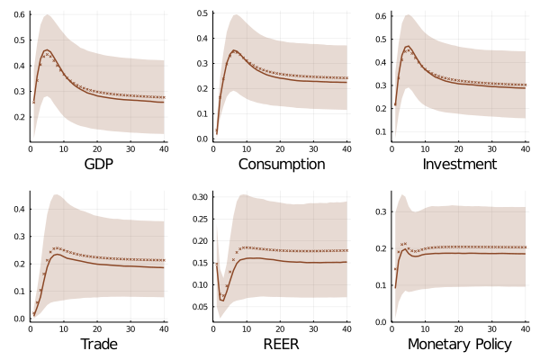
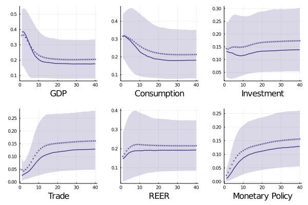
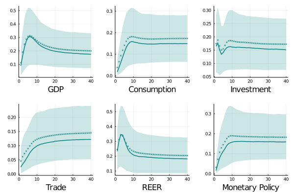
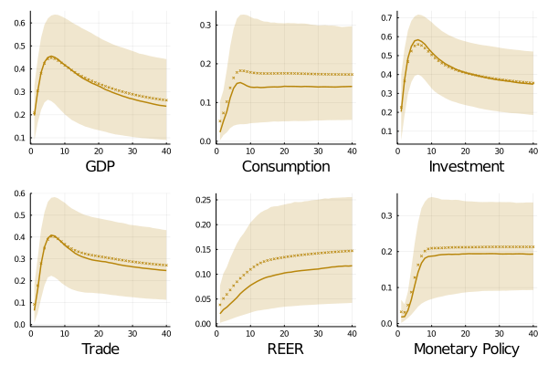
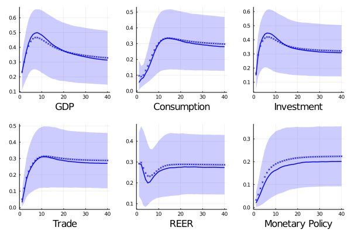
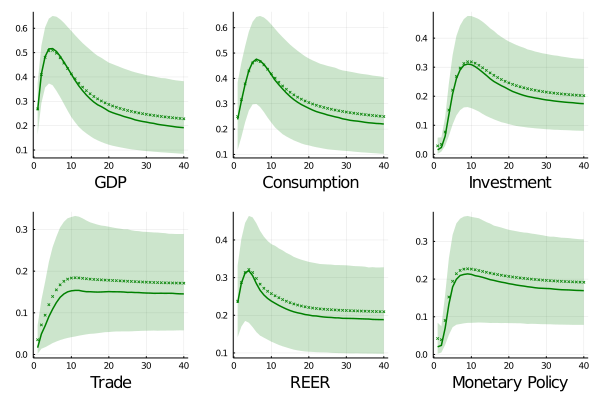

Global shocks ....
 With an initial contribution of 25 and 21 percent on output and investment fluctuations, global shocks shows an increasing path over the first 2 years achieving a participation around 40 percent for these aggregates and 34 percent on consumption. These results are reduced until 25 percent, and 30 percent respectively (with 22 percent on consumption). The impact of fundamental global shocks exhibits a hump shape reflecting not only the persistent nature of the shock but also a "slow" adjustment in the economy.
On the other hand, global shocks explains near 18 percent of interest rate volatility raising rapidly (the first quarter pass from 9 to 16 percent) after the fundamental shock hits. In contrast, the effect over real exchanges rates are close to be constant suggesting small frictions in the international trade in this country. A remark to do is that effective exchange rates are more related to fundamental shocks in the short and long run (it could be explained by higher movements in the spot market and not in the future one, but we lack of data to make this statement).
The previous results, including the fact that the consumption and trade balance channels are small in the short run indicates that ....
 Fundamental global conditions impact on macro aggregates for the Brazilian economy is close to 17-18 percent in the long-run for output, consumption, and effective exchange rate; while, around 13-14 percent in the rest of variables. At difference with Argentina, the dynamic of does not present a hum shape in the first two variables. Instead, the impact is higher in the short run and medium run (38 and 31 percent at the same period and 20 percent after 2 years),
On the other hand, monetary policy response is the smallest (in the long run) among the analysed economies with a explanation power near to 13 percent, and below two digits in the first three years. Another particularity of Brazilian economy is that effective exchange rate displays being determined between 14-19 percent in the whole horizon achieving 18 percent during the first year.
 The contribution of global shocks on Chile's production displays a clearly hump shaped pattern with an initial impact of 9 percents which promptly reaches its peak after 6 quarters decreasing until 18 percent in a long term. In the same horizon about 15 percent of consumption and investment fluctuations are driven by these shocks, however their dynamics are different; while the impact in the short run for consumption is small (with a peak after 8 quarters) , it is higher for investment contributing for 16 percent in the same shock period.
As in the Brazilian case, global shocks account for almost one third of exchange rate variability in the first year, reducing during the next years to be stabilized around a 18 percent . Interest rates follows the same behavior as the rest of emerging countries. On the other side, the response of trade balance is slow but increasing over as the time pass achieving a share of 12 percent with a maximum contribution close to 16 percent after two years.
 The long run effect of global innovations on Colombian macro aggregates are comparable with the most countries (around 22 percent for consumption and GDP, while 15 percent for trade and real exchange rate). Their instantaneous contribution in investment is the smallest among the selected developing economies, reflecting the high sunk cost required in petroleum industry. Indeed, the low transmission into consumption and GDP could evince the timing to complete the pass-trough of crude-oil prices into the economy.
This is only for visual purposesThis is only for visual purposesThis is only for visual purposes This is only for visual purposesThis is only for visual purposesThis is only for visual purposes This is only for visual purposesThis is only for visual purposesThis is only for visual purposes This is only for visual purposesThis is only for visual purposesThis is only for visual purposes This is only for visual purposesThis is only for visual purposesThis is only for visual purposes
 Peruvian's exposure to global shocks are on par with Chilean results in the medium horizon, but apparently they differ in the channel that leads to this point. While for the later almost a quarter of the economy variability is supported by movements in global conditions being the trade channel an important one; for the former, it looks not be the case since only 15 percent of the trade balance and real exchange rate fluctuations are related with global shocks. In the long run, the Peruvian economy registers the highest vulnerability with almost one third being explained by world shocks.
This is only for visual purposesThis is only for visual purposesThis is only for visual purposes This is only for visual purposesThis is only for visual purposesThis is only for visual purposes This is only for visual purposesThis is only for visual purposesThis is only for visual purposes This is only for visual purposesThis is only for visual purposesThis is only for visual purposes This is only for visual purposesThis is only for visual purposesThis is only for visual purposes
 Among all the analysed emerging economies, output and investment in South Africa are the lowest affected by fundamental global shocks (18 and 14 percent in the long run), while consumption is closer to the rest of economies (21 percent). In contrast, global shocks exhibits a stellar role (regarding other ECXs) in real exchange rate behavior with a contribution that oscillates between 29-31 during the whole horizon. A last point to remark is the path of the explanation power in interest rates that shows a low reduction during the first year after the innovation, which is totally opposite respect with the rest of countries -both, developed and emerging.
Here I will point out the similarities in trade structure and how this ones could explain in some extend what we see. for example, brazil and argentina are similar and both export grains, while peru and chile trade mining (mainly cooper but peru also gold). In the other hand, the high exposure of the exchange rate for soa could reflect a low level of trade in futures for their commodities (platinium and iron) while the low effect on colombian reer is petroleum. Talk about asymmetry response in REER
Global shocks ....
If you have any doubt, suggestions, or simply want to talk, you can contact with me.